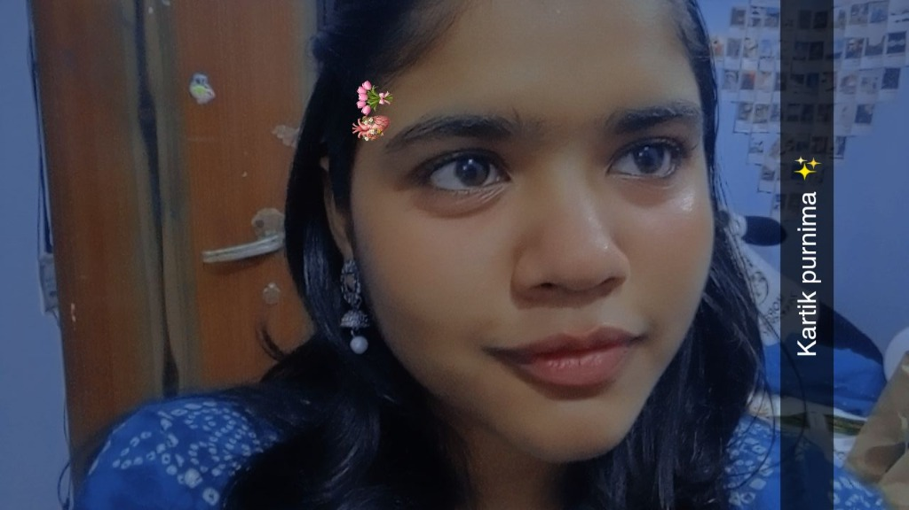

for my absolute best friend
🌸
A Little Garden
"I made you a little place to exist when everything is loud."
(tap whatever catches your eye... flowers, photos, bubbles, pond & butterflies! ✨)
🌙
tap moon
🌸 floral washi
Summer in Bloom 🌸
just her, making summer prettier 🌸 (tap photo)
🪴
Sage Wildflowers
water the seedling 🌱

🌸 Grand Botanical White Rose
"subtle pink blush, pure laughs & sweet memories"
🪷
ripple the lotus pond
🪷
✨ festive glow

Kartik Purnima ✨
okayyy, somebody understood the assignment (tap photo)
🔔
Garden Chime Shrub
ring the blossom chime ✨